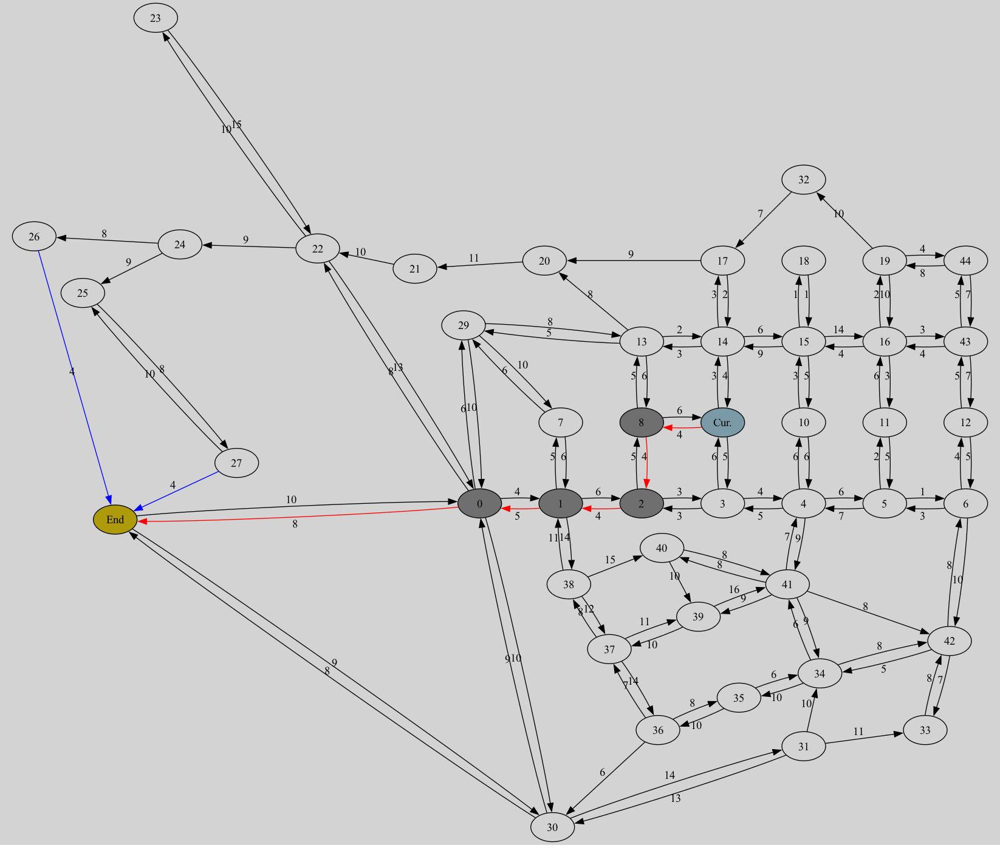

Project Description
This project demonstrates multiple shortest path (minimizing weight) algorithms on a graph which is meant to resemble a small part of the London transit system.
Click the buttons to generate an updated graph using your chosen algorithm:
Dijkstra, A*, or Multi-Threaded A*.
The image is generated dynamically from C++ programs running on the server. Weights are attached to every arrow (edge, or road).
My goal was to find an algorithm that starts at a randomly chosen beginning node ("Cur") and reaches a random destination node ("End"), in the least amount of edge explorations as possible. I started with plain Dijkstra's Algorithm, but quickly realized how computationally expensive it is, due to it exploring every node around the starting node. Then I implemented the A* Algorithm and was excited that it took very few path searches. However, I realized that this algorithm sometimes stumbled upon incorrect answers (paths that are not the shortest path) because heuristic weighting is not perfect. I then put together a Multi-Threaded A* algorithm that used a main thread based on A*, with an auxiliary thread that spawned on main thread activation. This auxiliary thread is essentially Dijkstra's Algorithm. Additionally, I added logic to make sure that the Multi-Threaded Algorithm completes when the main and auxiliary thread paths connect. This parallel algorithm highly decreased the amount of edges searched compared to Dijkstra's Algorithm, while still maintaining accuracy (unlike the A* Algorithm). The parallel algorithm is the best of both worlds, utilizing a combination of the other two algorithms.